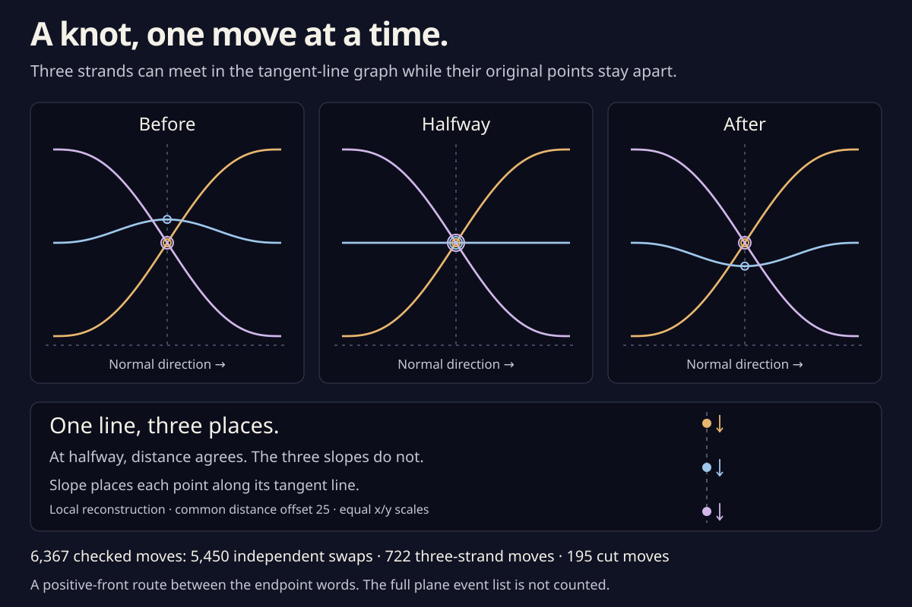
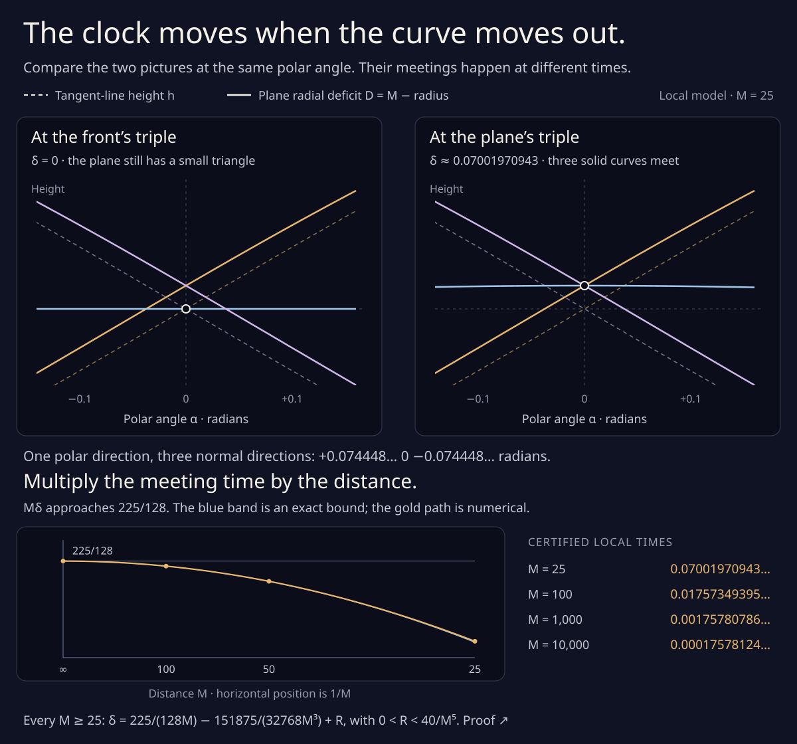

A knot, one move at a time.
Two orbital drawings unfold into braids of tangent lines. Their knots agree. Now follow the small moves that connect them: exchange independent crossings, slide three strands, or move the cut around the circle.
Start with one three-strand move. As the little triangle switches sides, three graph heights agree for an instant. Their slopes keep the original three points apart.
From the 11 / 6 tangent-line braid to the 11 / 8 braid. The strip highlights the crossings used by this move.
A three-strand move exchanges two ways to make three crossings.
Nothing animates. Sliders support arrow keys, Home, and End. Changing the selected move resets its local progress.

What do the three kinds of move do?
An independent swap changes the order of two crossings that use separate strands. They pass at different heights and never meet. A three-strand move passes one crossing through a third strand. At halfway, all three graph heights agree, but their three slopes are distinct. The lifted knot stays embedded.
A cut move changes where we start reading a closed braid. Moving the cut past its first crossing puts that crossing at the end of the word. The local graph itself stays fixed; the white dashed cut moves.
The complete sequence contains 5,450 independent swaps, 722 three-strand moves, and 195 cut moves. All its words have eleven strands and 106 positive crossings, with a one-component closure. The sequence is a checked route, with no claim that it is shortest.
Why does a meeting in the graph keep the points apart?
The graph records normal direction θ and signed line distance h. Its slope p supplies the coordinate along that line. With N = (cos θ, sin θ) and N′ its quarter-turn, the original point is q = hN + pN′.
Equal direction and distance therefore give one tangent line. Different slopes give different points along it. The halfway graph has slopes 15/8, 0, −15/8 in this model. It depicts a line touching three places, rather than three branches of the original drawing meeting at one point.
The right-hand picture reconstructs the local model after subtracting 25 from every distance. This moves the points along their normals and keeps their tracing velocities nonzero throughout each displayed move. Its coordinates illustrate the local formula; they are not positions on either original orbital endpoint.
The projected curves do pass through a triple at a different moment in this local model. That meeting uses three different normal directions. The right-hand picture keeps one direction fixed. See why the two triple moments differ ↗
Why do the two triples happen at different moments?
Moving the curves far outward makes their radial graphs approach the tangent-line graphs. Compare them at the same polar angle: a strand with a steeper slope rises farther. At the graph’s triple moment, that unequal rise leaves a little triangle in the plane. Moving the middle strand a little more closes it.
Read this picture with δ increasing. An offset of 25 puts the plane triple at about δ = 0.07001970943, after the front triple at zero. Doubling a large offset roughly halves the delay. A rational calculation bounds the delay for every offset at least 25. It concerns these three local arcs; the full route’s numerical event threshold remains open.

Does this give a route between the plane drawings?
The local-move list now supplies a positive-front isotopy, rather than just an algebraic equality or a classification result. A common negative distance offset makes its plane projection regular; a deliberately loose bound of one billion works for the full construction. The positively curved endpoints can be offset and brought home without stopping or introducing a direct touch.
Consequently there is a regular route from 11 / 6 to 11 / 8 without direct self-tangencies. A follow-up counts 66 opposite-facing touches on a generic version: 33 births while moving the first endpoint outward, and 33 deaths on the way home to the second. The middle has no touches. See the count, certified locations, and plot ↗
A uniform radial-family argument counts 722 middle triple passages if the common offset is sufficiently large. A complete circle census now gives 138 and 132 resolved outward triples, so this specified distant construction has exactly 992 triples. No numerical threshold is supplied for the middle-event conclusion or the local fourfold perturbations. The circle study follows one selected outward triple and shows the complete signed event diagram.
This gives no route avoiding both kinds of touch. The twelve-triple lower bound for such a route remains a separate question; 66 is not claimed to be the fewest touches.
The construction note explains the smoothing, the matching of endpoint fronts, and the offset argument. The viewer displays each local move; it does not numerically parametrize the entire plane route.
What is checked, and what is illustrated?
A small independent replayer checks every local rule and the exact final word. A separate search produces the moves by exposing and cycling the letters of the earlier conjugator. Exhaustive four-strand relation graphs through word length six supply 3,279 extraction controls. The browser also replays the full record before showing the controls.
The endpoint words inherit their completeness from the separate rational geometric proofs. The polynomial local models and offset argument are explained in the note. Sampled paths and rounded readouts here are illustrations of those formulas, not a new global event census.